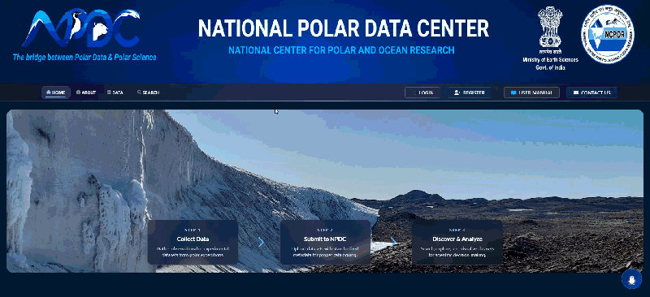

Projects
Things I've built
PROJECT 01
AI-Driven Polar Data Management System
Python · Django · Neural Networks · NLP

An AI-powered platform designed to improve the discovery, access, and management of polar research data within the National Polar Data Centre.
Intelligent Search
Developed an NLP-based search module capable of understanding user queries and improving relevance when retrieving datasets from the polar data catalogue.
Research Assistant Chatbot
Built a domain-specific chatbot to help researchers navigate polar datasets and understand data submission procedures.
Fog Prediction
Developed neural-network-based classification models using Antarctic and Arctic observation data to identify and predict fog conditions.
Submission Assistant
Created automated tools to validate and preprocess research-data uploads before submission.
PROJECT 02
NCPOR Outreach Event Portal
Python · Django · PostgreSQL · JavaScript · OpenRouter AI

A full-stack outreach platform designed for the National Centre for Polar and Ocean Research to publish scientific events, manage registrations, showcase event media, and engage students, teachers, and researchers.
Event Management
Built an admin-powered system for creating and managing workshops, exhibitions, field visits, seminars, conferences, scientific talks, and awareness programs.
Event Discovery & Analytics
Developed searchable event listings with filters, pagination, calendar integration, event statistics, participant trends, event-type distribution, and institutional analytics.
Registration & Media Moderation
Implemented public RSVP workflows and event media uploads with administrative approval, event capacity tracking, participant records, and dedicated media galleries.
AI Outreach Assistant
Integrated a domain-specific chatbot using keyword matching, fuzzy search, event data, NCPOR information, and optional OpenRouter AI responses to help visitors discover events and understand outreach programs.
Python · Django · HTML/CSS · JavaScript · SQLite
A web-based manuscript management platform designed to streamline the research-paper submission and review process.
Multi-stage Review Workflow
Designed a workflow that manages manuscript submission and review through multiple stages.
Role-Based Access Control
Implemented separate access and dashboards for Submitters, Reviewers, and Data Providers.
Administrative Tools
Developed tools for reviewer assignment, submission validation, and data management.
Responsive Interface
Built responsive interfaces using HTML, CSS, and JavaScript for different user roles.
ESP32 · Python · ThingSpeak · scikit-learn
An IoT-based environmental monitoring system that combines sensor data with machine learning to monitor and predict indoor air-quality trends.
Sensor Data Collection
The ESP32 collects environmental measurements: PM2.5, Temperature, Humidity, and CO₂.
Cloud Monitoring
Data is transmitted to ThingSpeak for continuous cloud-based monitoring and visualization.
Predictive Analytics
Machine-learning techniques using scikit-learn analyze collected data and predict upcoming air-quality trends.
Proactive Management
Enables proactive environment management based on predicted air quality conditions.